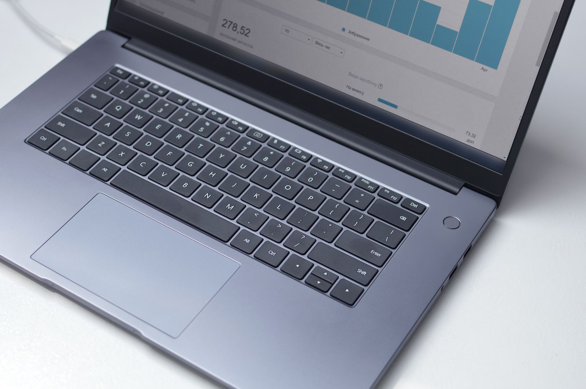

製造業 / 50名規模
基幹システム刷新
紙台帳での発注・在庫管理を刷新し、基幹システムへ一元化。属人化していた業務を可視化し、月間80時間の業務削減を実現しました。
-80時間/月業務削減
ABOUT US
SOLA Consultingは、2016年の創業以来、中小企業の経営者・現場スタッフと直接向き合いながら、 DX推進と業務改善を支援してきました。大企業向けの理論をそのまま持ち込むのではなく、 人手や予算に制約のある現場で「実際に回る」仕組みづくりにこだわっています。
「ツールを入れることがゴールではなく、現場が変わることがゴールです。」 代表 / 中小企業診断士 佐々木 亮
WHY CHOOSE US
SERVICES
業務フローの可視化から、最適なSaaS選定・導入設計、社内トレーニングまで一気通貫で支援します。
現状分析にもとづき、収益性・生産性向上のための戦略立案と、実行可能なアクションプランを策定します。
導入したツールを使いこなせるよう、階層別の研修プログラムを設計。定着率の向上を後押しします。
CASE STUDIES
これまでにご支援した企業様の事例の一部をご紹介します。

紙台帳での発注・在庫管理を刷新し、基幹システムへ一元化。属人化していた業務を可視化し、月間80時間の業務削減を実現しました。
店舗ごとにばらついていた在庫・POSデータを一元化。発注精度が向上し、機会損失と余剰在庫の両方を大幅に削減しました。
特定の担当者にしか分からなかった業務手順をマニュアル化・可視化。新人教育にかかる期間を大きく短縮しました。
FLOW
フォームまたはお電話にて、現在の課題やご希望の内容をお聞かせください。
専属コンサルタントが業務フローや課題を丁寧にヒアリングし、方向性を整理します。
支援範囲とスケジュール、費用を明示したご提案書をお渡しします。
導入後も定期フォローアップを実施し、現場に根づくまで伴走します。
FAQ
最低契約期間は3ヶ月からとしており、それ以降は月単位で柔軟にご契約いただけます。
オンライン相談・支援が中心のため全国対応可能です。首都圏であれば訪問でのご支援も承っております。
問題ありません。専属コンサルタントが操作方法のレクチャーから運用定着まで伴走しますので、ITが苦手な方でも安心してご利用いただけます。
ご支援内容により異なりますが、無料ヒアリングのうえ、支援範囲と費用を明示したお見積りをご提示します。